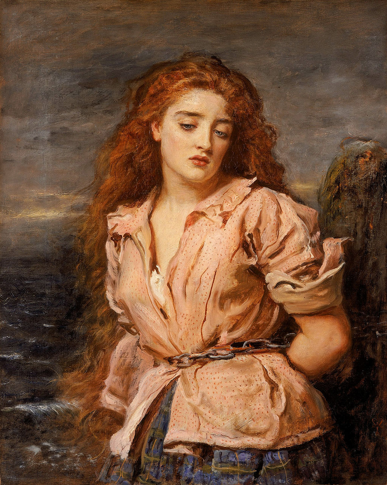

<head>
<meta charset="UTF-8" />
<meta name="keywords" content="drawing, painting" />
<meta name="description" content="drawings by Sunjy" />
<title>Sunjy</title>
<link rel="shortcut icon" type="image/x-icon" href="../../mImages/mCommon/favicon.ico" media="screen" />
<link rel="stylesheet" type="text/css" href="../../mCsses/mCommon/mCssA.css" />
<link rel="stylesheet" type="text/css" href="../../mCsses/mCommon/mCssB.css" />
<link rel="stylesheet" type="text/css" href="../../mCsses/mCommon/mCssC.css" />
<link rel="stylesheet" type="text/css" href="../../mCsses/mCommon/mCssD.css" />
<link rel="stylesheet" type="text/css" href="../../mCsses/mContent/mCssA.css" />
<link rel="stylesheet" type="text/css" href="../../mCsses/mContent/mCssB.css" />
<link rel="stylesheet" type="text/css" href="../../mCsses/mContent/mCssC.css" />
<link rel="stylesheet" type="text/css" href="../../mCsses/mContent/mCssD.css" />
</head>
<script type="text/javascript" src="../../mScripts/mContent/mContentAA.js" /></script>
<script type="text/javascript" src="../../mScripts/mContent/mContentAB.js" /></script>
<script type="text/javascript" src="../../mScripts/mContent/mContentAC.js" /></script>
<script type="text/javascript" src="../../mScripts/mContent/mContentAD.js" /></script>
<script type="text/javascript"></script> 
<script type="text/javascript">
document.write('<div class="mImgAbsolute"></div>');
/*
document.write('<p class="mFontSizeBColor" />From a white paper...</p>');
document.write('<table class="center"><tr><td>');
document.write('');
document.write('</td></tr></table>');
*/
</script>


<script type="text/javascript">
document.write('<p class="mFontSizeBColor" />The Martyr of Solway</p>');
document.write('<p class="mFontSizeSColor" />“The Martyr of Solway” by John Everett Millais portrays Margaret Wilson (1667 – 1685), who was a young Scottish teenager, of the Scottish Presbyterian movement.<br><br>Margaret Wilson was executed by drowning for refusing to swear an oath declaring James VII (James II of England) as head of the church.<br><br>Wilson was executed along with Margaret McLachlan. However, Wilson became the more famous of the two women because of her youth; she was about 18 years of age at the time of her death.<br><br>As a teenager, her faith in the face of death became celebrated as part of the martyrology of Presbyterian churches. They believed that no man, not even a king, could be the spiritual head of their church.<br><br>They also opposed the authority of the bishops in the Church. They believed that only Jesus Christ could be the spiritual head of a Christian faith.<br><br>Margaret Wilson and Margaret McLachlan were chained to stakes on the Solway Firth. As the tide rose, choking on the saltwater, Margaret Wilson was told to offer a prayer for the King, which she did, but she continued to refuse to renounce her beliefs. <br><br>Infuriating her accusers, and she was forcibly thrust beneath the waves. Her accusers in their zeal had ignored a reprieve from the Privy Council of Scotland.<br></p>');
document.write('<table class="center" /><tr><td>');
document.write('<br>Margaret Wilson was executed by drowning for refusing to swear an oath declaring James VII (James II of England) as head of the church.<br><br>Wilson was executed along with Margaret McLachlan. However, Wilson became the more famous of the two women because of her youth; she was about 18 years of age at the time of her death.<br><br>As a teenager, her faith in the face of death became celebrated as part of the martyrology of Presbyterian churches. They believed that no man, not even a king, could be the spiritual head of their church.<br><br>They also opposed the authority of the bishops in the Church. They believed that only Jesus Christ could be the spiritual head of a Christian faith.<br><br>Margaret Wilson and Margaret McLachlan were chained to stakes on the Solway Firth. As the tide rose, choking on the saltwater, Margaret Wilson was told to offer a prayer for the King, which she did, but she continued to refuse to renounce her beliefs. <br><br>Infuriating her accusers, and she was forcibly thrust beneath the waves. Her accusers in their zeal had ignored a reprieve from the Privy Council of Scotland.<br>" />');
document.write('</td></tr></table>');
</script>


